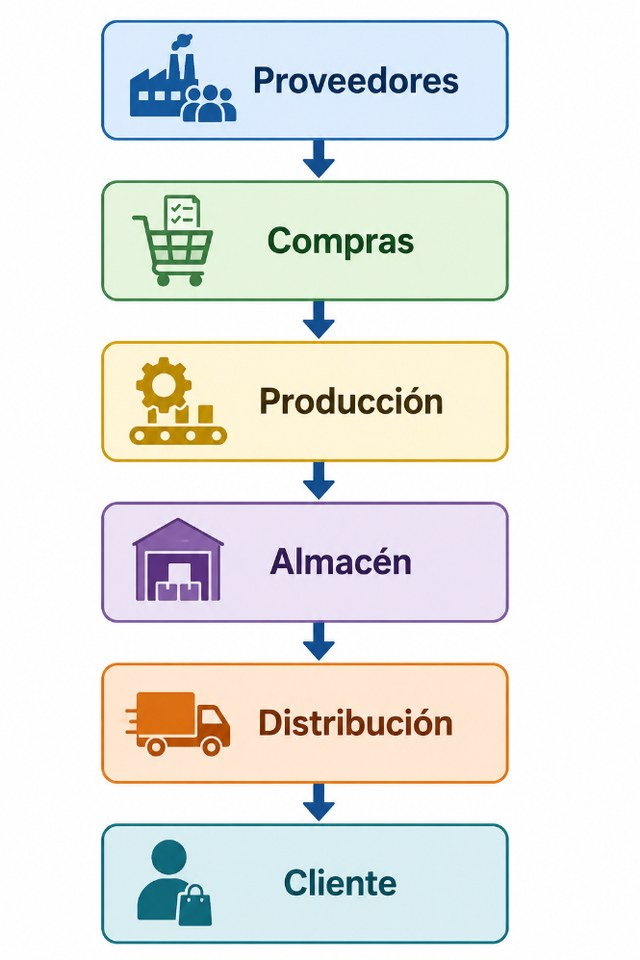

Unidad I · Tema 1.4
Componentes de la cadena de suministro
Los diferentes actores que existen en la cadena de suministro interactúan de forma interdependiente: cada elemento depende del anterior. Si un proveedor entrega tarde, toda la producción se retrasa.
Flujo de actores en la cadena de suministro

Cada elemento depende del anterior. Si un proveedor entrega tarde, toda la producción se retrasa.
Descripción de cada componente
1. Proveedores
Suministran las materias primas necesarias para los procesos industriales. En el ramo textil destacan:
- Algodón
- Poliéster
- Colorantes
- Botones
- Cierres
- Hilo
2. Compras
Selecciona proveedores estratégicos considerando criterios rigurosos:
- Costo
- Excelencia en el producto
- Periodo de entrega del producto
- Certificaciones
- Capacidad de producción
3. Producción
Transforma la materia prima en producto terminado. En una empresa textil comprende:
- Hilatura
- Tejeduría
- Tintorería
- Acabados
- Confección
4. Almacenes
Custodian físicamente los materiales en sus diversas etapas:
- Recurso primario (materias primas e insumos).
- Proceso (material semielaborado y lienzos cortados).
- Finalización del producto (prendas listas para embarque).
La intención principal es que exista disponibilidad a bajo costo.
5. Distribución
Hace llegar el producto terminado al cliente final o centros de venta. Puede realizarse mediante:
- Transporte terrestre.
- Marítimo.
- Aéreo.
- Ferroviario.
- Multimodal.
6. Cliente
Representa el último eslabón de la red de valor. Toda la cadena trabaja coordinadamente para satisfacer sus necesidades.
Comprueba tu comprensión
¿Cómo afecta una falla en la etapa de compras o hilatura al cumplimiento del pedido del cliente final en una cadena de confección textil?